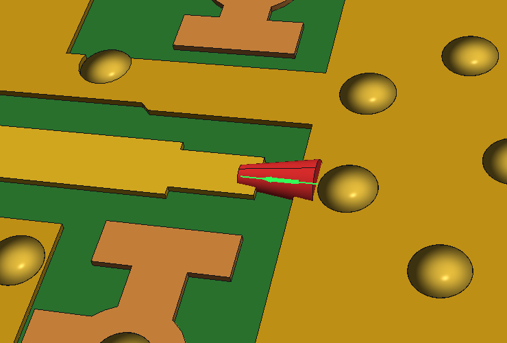
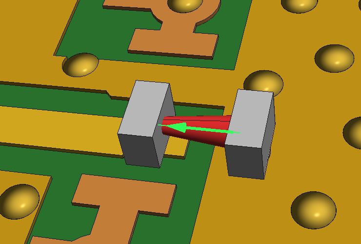

Деталь в модели: lumped-тело, порт и Circuit
Как вставить в 3D-модель резистор, конденсатор или целый чип так, чтобы менять номинал без пересчёта. Что такое порт на 50 Ом и почему он не складывается с резистором 51 Ом. Зачем рисовать у детали металлические торцы и что такое port_l. На примере 0402 51 Ом на пине RFC (модели j4_half_clean и j4_half_rstd).
0Зачем это
В модели платы почти всегда есть детали: разделительный конденсатор, нагрузка, чип. Номиналы мы подбираем, а чип часто есть только в виде файла S-параметров. Пересчитывать 3D (часы) ради каждого номинала — дорого. Circuit позволяет посчитать 3D один раз, а детали подставлять потом, за секунды.
Старый способ — lumped-элемент телом (цилиндр, которому назначено «ты R/L/C») — описан в «Согласование СВЧ-тракта», раздел 12. Здесь — новый способ и как они соотносятся.
1Два способа вставить деталь
| Lumped-тело в геометрии | Порт + Circuit | |
|---|---|---|
| что это | тело, которому сказали «ты резистор 51 Ом» | порт: дырка в поле с опорой 50 Ом |
| где живёт R | внутри FDTD-расчёта | в Python, после расчёта |
| сменить 51 → 50 | новый расчёт (часы) | число в Circuit, мгновенно |
| время расчёта | не растёт | каждый порт — ещё один прогон (3 порта ≈ 3× времени) |
| что можно вставить | R, L, C | R, L, C, двухполюсники T / П / линия, файлы .s1p / .s2p (чип, измеренная нагрузка), отрицательная L (port_l) |
| результат для простого R | тот же | тот же |
Circuit — это расширение lumped: та же деталь, только вынесенная из расчёта поля. Как схема поверх 3D-результата в CST.
2Что делает расчёт, что делает Circuit
- Расчёт. Порты возбуждаются по очереди. Порт, который сейчас не возбуждается, нагружен на свои 50 Ом и поглощает то, что к нему пришло. Получается матрица S между всеми портами — например SMA, P_cap (место C6), P_pin (место резистора). Это «чёрный ящик» платы с тремя дырками.
- Circuit. Когда результат показывается, Circuit математически вставляет в каждую дырку свой элемент: R, L, C или файл. Порты, занятые элементами, исчезают; остаётся то, что не занято, — обычно только SMA, и его S11 ты видишь на графике.
- Сменил номинал — Circuit пересчитал склейку. 3D не трогается, расчёт не устаревает: Circuit не входит в «отпечаток» модели.
Ровно так же new_board/halves/cascade.py склеивает две половинки платы и файл свича. Circuit — это то же самое, встроенное в окно customcst.
3Порт 50 Ом и резистор 51 Ом: как это вместе работает
Они не складываются. 50 Ом порта — это не деталь в цепи, а линейка, которой мерили: опорное сопротивление, как у VNA после калибровки.
Circuit заменяет эти 50 на твой элемент, а не добавляет к ним. Математически:
- При Z = 50 получается ΓR = 0, и остаётся S11 как посчитано. Поэтому порт без элемента означает «на нём 50 Ом».
- Замена 51 → 50 меняет ΓR всего на 0.01 — почти ничего.
- Опору можно было взять любую, хоть 10 Ом: после того как Circuit повесит 51 Ом, ответ тот же, это точная математика. 50 удобно, потому что детали обычно рядом.
4Голый порт и деталь с телом
Одна и та же нагрузка «51 Ом на пине RFC» нарисована двумя способами.

Красный конус P_pin лежит поперёк зазора: от конца пада пина к paddle (земле под чипом). Металла детали нет. В Circuit: R51, port_l 0.3.

Два серых торца — медь (PEC) 0.25 × 0.5 × 0.35 мм: левый на паде пина, правый на paddle. Это металлические концы настоящего 0402. Порт P_pin — конус между внутренними гранями торцов, на середине высоты: там, где в резисторе резистивная плёнка. Керамики нет (её εr не учитываем). В Circuit: R51, port_l 0.
Ток во втором случае идёт так: пад пина → торец → [порт = плёнка = 51 Ом из Circuit] → торец → paddle → виа → земля. Весь металл настоящий, в геометрии; идеален только сам номинал.
| модель | на пине на 5.75 ГГц | |S11| платы (C6 1.41 пФ) |
|---|---|---|
| голый порт (j4_half_clean) | ≈ 51 Ом | 0.14 (−17 дБ) |
| 0402 с торцами (j4_half_rstd) | ≈ 53.5 + j18 Ом | 0.28 (−10.8 дБ) |
| стенд (тот же 0402 запаян) | 0.31 (−10.3 дБ) |
Тело детали со своими ~0.5 нГн (корпус + возврат тока через paddle) отражает больше, чем разница 51 и 50 Ом. Поэтому в j4_half_rstd замена 51 → 50 ничего не меняет, а стенд совпадает только с моделью, где деталь нарисована.
5port_l: когда 0.3, а когда 0
У самого lumped-порта есть путь тока по краю ячеек сетки — и у него своя индуктивность, ~0.3 нГн на зазоре в доли миллиметра. В реальности её нет. port_l (нГн) снимает её у каждого элемента последовательно, то есть вставляет отрицательную L.
- Голый порт (
j4_half_clean, C6 в обеих моделях):port_l 0.3. Порт стоит вместо всей детали, его лишняя L не нужна. С port_l 0.3 деталь ведёт себя так же, как старое lumped-тело с теми же номиналами. - Порт внутри детали с торцами (
j4_half_rstd):port_l 0. Индуктивность резистора уже в геометрии (торцы + возврат через paddle), порт короткий.
6Какие элементы есть в Circuit
| kind | портов | что это |
|---|---|---|
rlc | 1 | R, L, C последовательно (series) или параллельно (parallel), замыкает порт. series со всеми 0 = перемычка (short), parallel со всеми 0 = обрыв (open) |
series | 2 | R, L, C между двумя портами |
t | 2 | T-звено: L1 + R1, C на землю, R2 + L2 |
pi | 2 | П-звено: C1 на землю, L + R, C2 на землю |
line | 2 | отрезок линии: Z0, задержка (пс), потери (дБ/ГГц) |
touchstone | N | файл .sNp (RI / MA / DB): чип, измеренная нагрузка; пересчитывается к опоре портов, интерполируется, вне своей полосы — NaN |
У каждого элемента есть port_l. Подробно, с форматом в .toml: REFERENCE.md, раздел 12 «Circuit elements on the ports».
7Рецепт: сделать самому
- Геометрия (myCad / part.toml). Нарисовать металл детали (торцы) и тело-порт между ними: короткое, вдоль тока, там, где активная часть детали (плёнка резистора, диэлектрик конденсатора). Если тело детали не важно — просто конус поперёк зазора.
- customcst. Правый клик по телу: торцам тип PEC, порту тип port, impedance 50.
- Расчёт. Excite = all ports (нужна вся матрица S). Один расчёт на все номиналы.
- После расчёта. В дереве группа Circuit → правый клик → Add element: kind
rlc, topology series, r 51 (или l, c), порт P_pin (двойной клик по строке порта), port_l. Галка = подключено. - Варианты. Несколько элементов на один порт (R51 / short / open) — включать по одному. Или Add Touchstone file — как свич на пине.
- Проверка. Маркер на нужной частоте: для
j4_half_rstdна 5.75 ГГц ≈ −10.8 дБ, |S11| 0.28.
QandA/02_z0/sandbox/j4_half_rstd: копия с готовым расчётом, у P_pin снято назначение, R51 удалён. Назначь P_pin → port, 50 Ом (как было) — отпечаток модели совпадёт, и расчёт снова станет актуальным, пересчитывать не нужно. Потом добавь R51 и сравни с −10.8 дБ.
Правило: металл детали — в геометрию, номинал — в Circuit, порт — короткий и на месте активной части. Тогда Circuit добавляет только то, что действительно «идеально», а всё паразитное считает поле.
8Что когда выбирать
- Номинал известен и менять его не будешь (подтяжки, блокировочные кондёры, стандартная нагрузка) — lumped-тело. Дешевле по времени.
- Номинал подбираешь, или вместо детали стоит сложная штука (свич из .s2p, кондёр согласования, тестовая нагрузка open / short / 51) — порт + Circuit. Один расчёт, дальше перебор за секунды. Так сделаны C6, C2 и свич на новой короткой плате.
- Стандарт для сравнения со стендом (резистор, перемычка, обрыв) — рисуй его телом, порт внутри: голый порт врёт на 0.1–0.2 по |Γ| (раздел 4).
9Ловушки
- Снятая галка — не обрыв и не перемычка. Порт без элемента остаётся внешним портом результата на своих 50 Ом. Обрыв — parallel со всеми 0, перемычка — series со всеми 0 (или C = 1000 пФ вместо кондёра).
- Сменил impedance порта или его тип — это меняет модель, расчёт устаревает. Номиналы в Circuit — нет.
- C в series-резисторе — последовательно. Ёмкость «к резистору» (паразит) ставится в parallel, иначе получится разделительный конденсатор.
- Каждый порт — ещё один прогон. Не делай портами детали, которые не собираешься менять.
- Забыл port_l у голого порта — лишние ~0.3 нГн, на 5.75 ГГц это +11 Ом последовательно.
- touchstone вне своей полосы — NaN: график обрывается там, где кончается файл.
10Ответы из диалога
Ответ из диалога
Вопрос: как мы сделали lumped с настоящей геометрией? Два контакта как геометрия, потом как-то присоединили R51… Раньше lumped был просто цилиндр одним телом.
Два медных торца (PEC) — обычные тела геометрии: левый на паде пина, правый на paddle. Между ними порт P_pin — конус на середине высоты, там, где резистивная плёнка. В Circuit на P_pin — R51, series, port_l 0. Ток: пад → торец → [порт = 51 Ом из Circuit] → торец → paddle → виа → земля. Металл настоящий, идеален только номинал. Раньше цилиндр был сам и металлом, и номиналом — и номинал жил внутри расчёта.
Вопрос: порт у нас 50 Ом, а резистор 51 — как это вместе работает?
Они не складываются. 50 Ом порта — линейка, которой мерили. Circuit заменяет эти 50 на элемент: ΓR = (51 − 50)/(51 + 50) = 0.0099, S11 = S11 + S12·ΓR·S21/(1 − S22·ΓR). При Z = 50 ΓR = 0 — остаётся посчитанное. Опора может быть любой: ответ тот же.
Вопрос: Circuit — это расширение lumped? Можно было вставить lumped вместо порта, но тогда любое изменение номинала — пересчёт?
Да. Lumped-тело: время не растёт, но номинал — новый расчёт. Порт + Circuit: каждый порт — прогон, зато номиналы, файлы S-параметров и отрицательная L — мгновенно. Номинал известен — lumped; подбираешь или вставляешь чип — порт + Circuit.